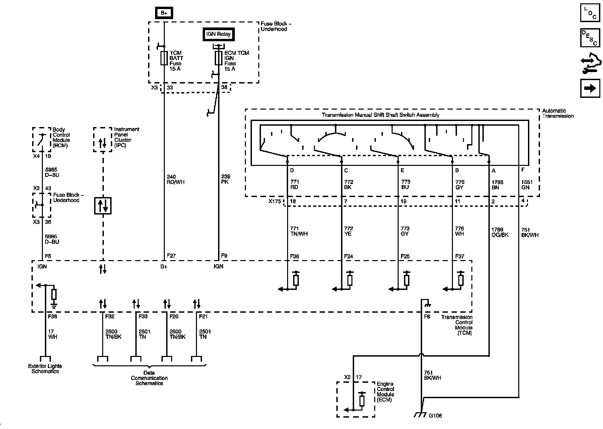
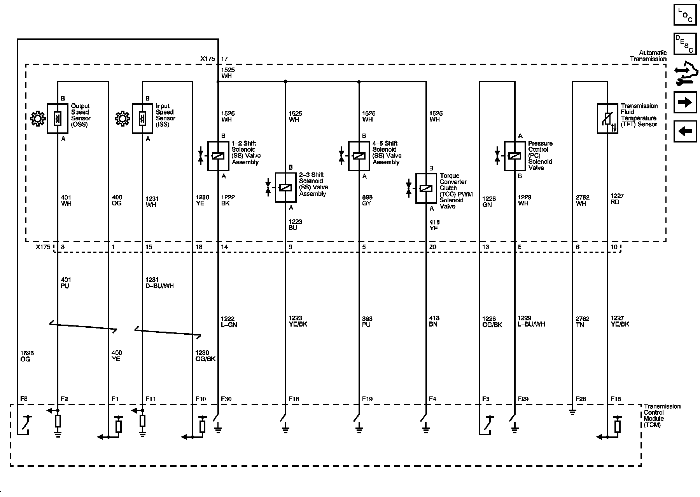
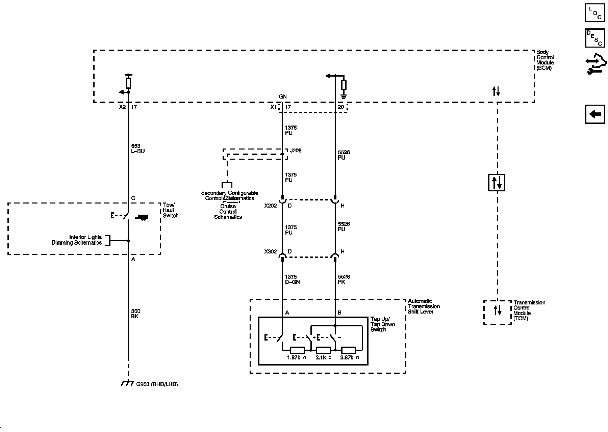

Operation CHARM
: Car repair manuals for everyone.
Home
>>
Cadillac
>>
2008
>>
SRX AWD V8-4.6L
>>
Repair and Diagnosis
>>
Powertrain Management
>>
Transmission Control Systems
>>
Diagrams
>>
Electrical Diagrams
>>
5L40-E/5L50- E Automatic Transmission
5L40-E/5L50- E Automatic Transmission
Automatic Transmission Controls Schematics
Power, Ground, Serial Data, and Switches

Sensors and Solenoids

Tap Shift System
